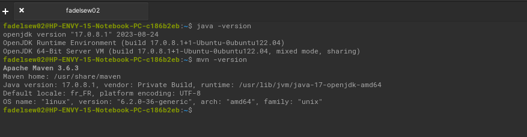

What is Spring Boot ?
- Java framework that allows you to create standalone, professional-quality applications
- Designed to simplify the development process by providing automatic configuration and dependency starters.
- It allows developers to focus more on writing application code by streamlining the configuration and setup process
- Spring Boot is a module of the Spring framework that enhances rapid application development (RAD) capabilities.
- It is used to create standalone Spring-based applications that can be run with minimal Spring configuration.
- Spring Boot provides a comprehensive infrastructure for developing microservices and enables the creation of enterprise-ready applications that can be easily executed.
Spring Boot Ecosystem
- Spring Framework:
- Inversion of Control (IoC): Spring Boot inherits the Inversion of Control capability from Spring, enabling the delegation of component management to Spring.
- Dependency Injection: Spring facilitates dependency injection, enhancing code modularity and testability. - Spring Data
- Database Access: Spring Data simplifies access to relational and NoSQL databases.
- JPA Integration: Uses Java Persistence API (JPA) for relational data persistence.
- MongoDB Support: Seamlessly integrates with MongoDB for NoSQL database-based applications. - Spring Security:
- Authentication Management: Spring Security provides robust features for managing user authentication.
- Access Control and Authorization: Enables access control and role-based authorization to secure application resources.
Spring Boot Ecosystem
- Spring Cloud
- Cloud-Native Applications: Extends Spring Boot capabilities for developing cloud-native applications.
- Distributed Configuration: Offers solutions for distributed configuration of applications in cloud environments.
- Service Discovery: Facilitates dynamic service discovery and management of calls between microservices. - Spring Batch
- Database Access: Spring Data simplifies access to relational and NoSQL databases.
- JPA Integration: Uses Java Persistence API (JPA) for relational data persistence.
- MongoDB Support: Seamlessly integrates with MongoDB for NoSQL database-based applications. - Spring Security
- Authentication Management: Spring Security provides robust features for managing user authentication.
- Access Control and Authorization: Enables access control and role-based authorization to secure application resources.
Getting Help
- Learn the Spring basics. Spring Boot builds on many other Spring projects. Check the spring.io web-site for a wealth of reference documentation. If you are starting out with Spring, try one of the guides
- Ask a question. We monitor stackoverflow.com for questions tagged with spring-boot.
- Report bugs with Spring Boot at github.com/spring-projects/spring-boot/issues.
Get Started
We talk about four (04) topics in this section.
- System Requirements
- Installing Spring Boot
- Developing Our First Application With Spring Boot
- Developing Advanced Application With Spring Boot
System Requirements
- Spring Boot requires Java 17 and compatible up to and including Java 21
- It needs also build tools
- Maven (3.6.3 or later)
- Gradle version 7.x (7.5 or later)
- Servlets Containers
- Tomcat 10.1 (6.0)
- Jetty (5.0)
- GraalVM Native Images
- GraalVM Community (22.7)
- Native Build Tools (0.9.27)
Installing Spring Boot
Check your current Java installation by using the following command:
$java -version
- Maven and Gradle are open source project management tool for Java projects.
- They help manage dependencies, compile source code, create packages, and deploy applications.
- Maven uses a configuration file called "pom.xml" to define the dependencies and plugins needed for the project. It is often used in conjunction with Spring Boot to make it easier to create and manage Spring projects.
Developing Our First Application
Prerequisites
- Maven and Gradle are open source project management tool for Java projects.
- They help manage dependencies, compile source code, create packages, and deploy applications.
- Maven uses a configuration file called "pom.xml" to define the dependencies and plugins needed for the project. It is often used in conjunction with Spring Boot to make it easier to create and manage Spring projects.
Two methods are used :
- Use online guides which provide instructions to create a project Spring Boot using Maven.
- Use Spring Initializr
Pour la suite de la formation, nous utiliserons Spring Initializr pour créer nos projets pour des raisons de simplicité
Use Spring Initializr
- Open your web navigator on https://start.spring.io
- Tap the command below : mvn clean install
- Execute your application: mvn spring-boot:run
Our first Code
Spring Boot Project Folder Structure
- src/main/java Directory
- Contains the main source code of the application. - The package structure typically follows the reverse domain name convention, for example, com.example.myapp. - The entry point of the application is often in a package like com.example.myapp with a main class annotated with @SpringBootApplication.
- src/main/resources Directory
- Contains non-Java resources of the application. - Configuration files, property files, XML files, templates, etc. - The application.properties or application.yml file is commonly used to configure the applications
- src/test Directory
- Authentication Management: Spring Security provides robust features for managing user authentication.
- Access Control and Authorization: Enables access control and role-based authorization to secure application resources. - templates Directory
- Contains templates files for templates engines .
- Used to generate dynamic views in web applications.
Spring Boot Project Folder Structure
- pom.xml File (Maven) or build.gradle File(Gradle)
- Contains project configuration, including dependencies, plugins, and other build settings. - Also manages the project's lifecycle, compilation, testing, packaging, etc.
- target Directory (Maven) or Build Directory (Gradle)
- Contains files generated during compilation, packaging and building of the project. - The executable JAR file of the application (if configured as such) is usually created in this directory.
- application.properties (or application.yml) File
- Contains configuration properties for the application
- Defines parameters such as database URL, ports, active profiles.
- Can be used to customize the behavior of the application without modifying the source code - static (or public) Directory
- Contains statics resources such as CSS files, Javascript files, images
- These files are served directly by the embedded web server
Fundamentals concepts of Spring Boot
Inversion of Control (IoC) and Dependency Injection
- Inversion of Control (IoC)
- It's a principle where the management of object lifecycles is inverted.
- Instead of the application directly creating its objects, it lets them be created and managed by an Inversion of Control container, such as Spring.
- This improves modularity and makes dependency management easier.
- This is a related concept to IoC. Rather than manually creating dependencies for a component, Spring automatically injects dependencies when the object is created.
- This makes the code more flexible, testable, and easier to maintain.
- Dependency Injection
- This is a related concept to IoC. Rather than manually creating dependencies for a component, Spring automatically injects dependencies when the object is created.
- This makes the code more flexible, testable, and easier to maintain.
Fundamentals concepts of Spring Boot
- Spring Boot Annotations
- Spring Boot extensively uses annotations to simplify configuration and development.
- @SpringBootApplication This annotation is used to mark the main class of the application and instruct Spring Boot to start scanning from this class to configure the application.
- @Autowired: Used to automatically inject dependencies into components.
- @Service, @Repository, @Controller: These annotations are used to declare components such as services, repositories, and controllers, respectively.
Creating RESTful Services with Spring Boot
- Introduction to RESTful Web Service Creation
- RESTful Web Services.
These services utilize the HTTP protocol to facilitate communication between systems. RESTful services are built on principles such as resource-oriented architecture and the use of HTTP methods (GET, POST, PUT, DELETE).
-
Advantages
Lightweight, scalable, and widely employed for constructing web APIs.
- RESTful Web Services.
Creating RESTful Services with Spring Boot
- Usage of @RestController and @RequestMapping Annotations
- @RestController
This annotation is a specialized version of @Controller, indicating that each method directly returns an object in the body of the HTTP response instead of using a view.
-
@RequestMapping
Used to map HTTP requests to controller methods. It allows defining the API endpoint, supported HTTP methods, and more.
- @RestController
- Handling Query Parameters and Responses
- Query Parameters
In RESTful services, parameters can be extracted from the URL (path variables) or the request itself. Spring Boot simplifies this with annotations such as @PathVariable and @RequestParam.
-
Responses:
Methods can return objects that are automatically converted into JSON (by default) or any other specified format.
- Query Parameters
Practical work
In this section, we will practice creating restful web services. The objective of the Tp will be to Create a simple RESTful service with Spring Boot to manage a list of books.